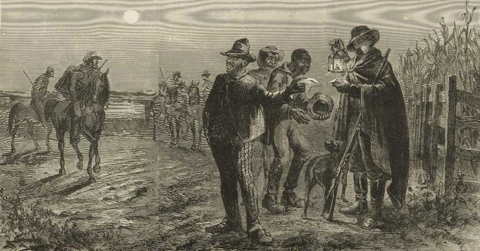
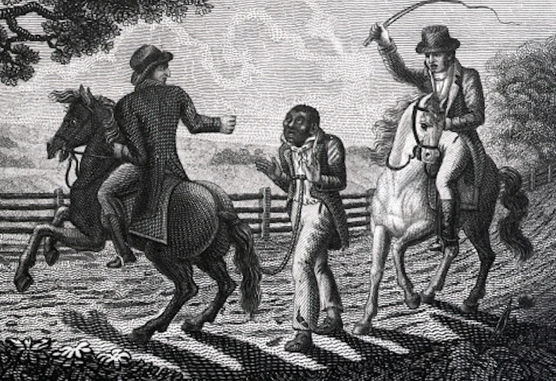
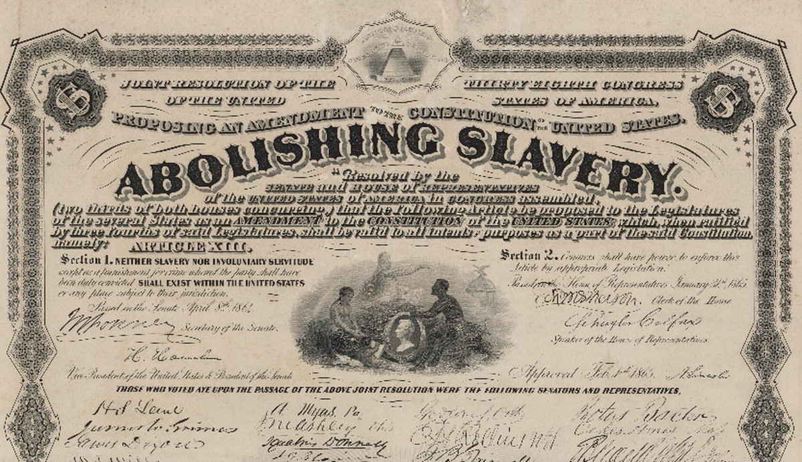
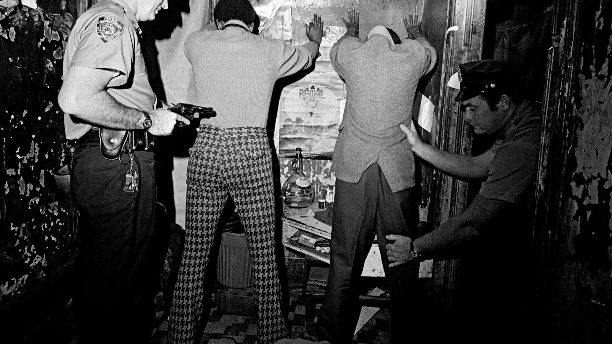
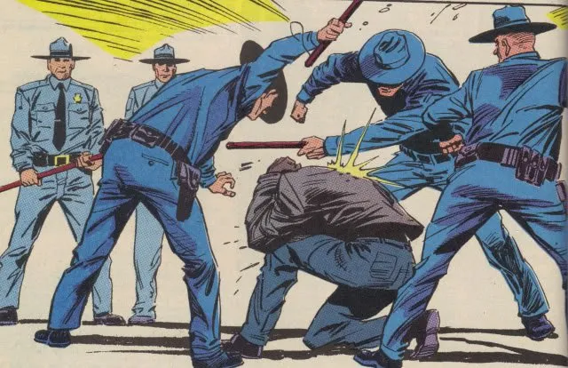
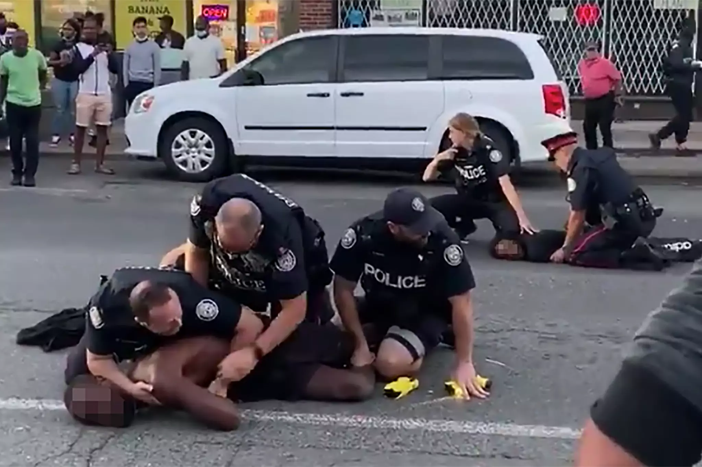
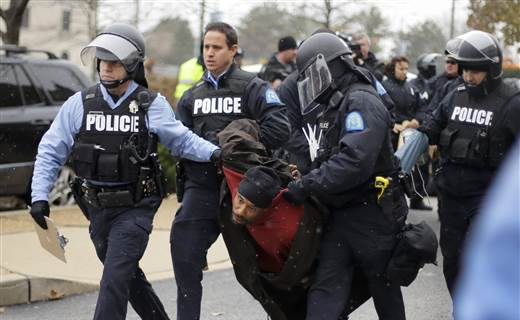

Police brutality has been a long-standing issue in the United States, particularly when it comes to violence against African Americans. This problem has its roots in the history of slavery, when Africans were forcibly brought to North America to be sold as slaves. In order to keep the slaves under control, white plantation owners needed white overseers to prevent them from escaping or rebelling. Even when there were enough white overseers, slaves still found ways to escape and gain their freedom. In response, some white commoners formed groups to capture, attack, and bring back escaped slaves to their owners for a reward (Purnell, page 67). This was the beginning of policing in the Americas. Fast forward to today, police officers is still fully equipped with guns and other equipment to capture and subdue African Americans in the name of justice. The difference is that now, the reward comes in the form of a paycheck rather than a bounty. However, as more escaped slaves were captured, the rewards offered by plantation owners increased, and the practice of policing became more widespread in the South. This led to a system of policing that was built on the capture and punishment of black people. Unfortunately, this legacy of policing has had devastating effects on the African American community. During the "War on Drugs," police specifically targeted black communities for possessing small amounts of crack cocaine, while white people with larger amounts of powder cocaine were not targeted as heavily (Marc Mauer, page 13). Crack is a cheaper, less potent form of cocaine, and it is more commonly used by Latino and black communities. This disparity in enforcement created a cycle of imprisonment and enslavement of black people, who were often forced to work for free in prison labor camps.
It is clear that the history of policing in America is closely tied to the oppression and enslavement of black people. Today, police brutality and violence against African Americans continues to be a major problem, and it is important to acknowledge the historical context in which this issue arose. We must work to reform the criminal justice system in order to ensure that all people are treated fairly and justly, regardless of their race or ethnicity.
 After the passage of the 13th Amendment to the U.S. Constitution, black people gained their freedom and the same rights as white people. However, this amendment had a catch that allowed individuals who committed a crime, particularly black or Latino individuals, to be considered as slaves and have no human rights (Gilmore, page 195). This loophole was exploited by whites in the South, who used the police force to imprison blacks as criminals and use them as slaves during the Jim Crow era. This led to an increase in incarceration levels as the police arrested and violently attacked black people for committing little to no crime. In prison, African Americans were treated as nonhuman and were exploited for their labor for profit. This demonstrated that the era of slavery was not over, as white people used the police department to force free black people to become criminals in America. Every African American who was sentenced to jail was given the longest possible sentence to profit from their free labor as a criminal. Although this loophole in the government system has been stopped over the years, it has led to mass incarceration.
During the "War on Drugs" era, the president at the time exploited the 13th Amendment and the prevalence of crack in poor communities to use the police department to initiate a mass attack on African and Latino people and imprison them for over 15 years under the "New York 'Rockefeller' Drug law” (Marc Mauer, page 1). Although the numbers may not seem significant, 15 years in prison is a significant amount of time that can ruin someone's life. The criminal justice system at that time was flawed and had the potential to ruin lives. When an individual goes to prison and comes out, they are different and unable to fit back into society because of their criminal record (Purnell, Page 68). Many companies refuse to hire someone with a criminal record because they see that person as a threat to their employees' safety. This makes it difficult for black people who have been to prison to find a job and reintegrate into society, which leads them back to prison. The unfair treatment of black people by the criminal justice system has caused an increase in the incarceration levels, as more black people continue to be arrested and attacked by the police department. Overall, it is clear that the criminal justice system has a history of racial bias and inequality that needs to be addressed to achieve a fair and just society for all.
In 2009, Barack Obama made history by becoming the first African American to be elected President of the United States. This was a momentous occasion that was celebrated by many people around the world, especially African Americans. It was seen as a sign of progress and hope for a community that had long been marginalized and discriminated against. However, the excitement and hope that many African Americans felt at the time quickly faded as they realized that Obama's election did not bring about the change they had hoped for. Despite the high expectations that many had of him, Obama did little to address the systemic racism and police brutality that had long plagued the African American community. One of the most glaring examples of this was Obama's response to the police murder of an unarmed black man. Rather than standing with the community and demanding justice for the victim, Obama seemed to side with the police and blame his own people for the conflict that had ensued (Purnell, page 52). This was a disappointing and hurtful action that made many African Americans feel that Obama was not truly one of them. Moreover, Obama's inaction in the face of police brutality and racism showed that even a black president did not have the power to change the deeply ingrained problems in the American policing system. This was a harsh realization for many African Americans who had hoped that Obama's election would bring about significant change and progress.
 In conclusion, while Barack Obama's election was a historic moment for African Americans, it ultimately did not bring about the change that was hoped for. The continued prevalence of systemic racism and police brutality in America shows that there is still much work to be done to ensure justice and equality for all.
Example: Racial conflict has been a significant cause of police violence against people of color in America. The police department has been abusing its power to attack and threaten African Americans and their communities. In numerous instances, police officers have attacked black students who are simply going about their daily routines and hurled racial slurs at them (Tera, page 253). These actions are unacceptable and must be addressed immediately. It is alarming that police officers can assault innocent black students with impunity. If this behavior is allowed to continue, more students of color will be attacked by the police, and the safety of our communities will be jeopardized. The police department must be held accountable for their actions, and the system must change to prevent such injustices from happening. It is essential that the government takes action to address police brutality and the use of racial slurs by police officers. All human beings have the right to be treated with respect and dignity, regardless of their race. Therefore, it is crucial to ensure that law enforcement officers uphold these principles and maintain law and order while respecting the rights of all individuals.
The issue of police violence against people of color is a matter of grave concern that needs to be addressed urgently. The police department must take responsibility for its actions and take steps to prevent any further incidents of brutality against African Americans. The government must also act to ensure that the rights of all individuals are protected, and the use of racial slurs by police officers is eliminated. By taking these measures, we can work towards a safer and more equitable society for all.
 